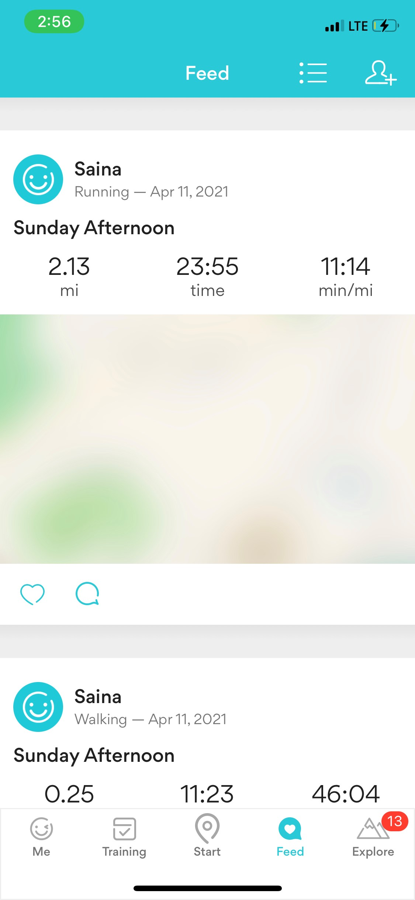
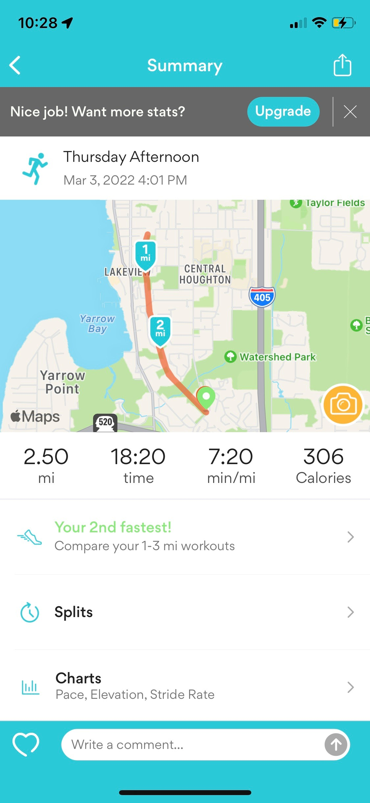

My genius:
Throughout my entire life I have been in and out of certain hobbies, but never did I expect that the one sport I could never see myself doing would be my current favorite thing to do. I used to think running was weird because it had no “game aspect” to it and it was mainly individual so there was no “team factor”. But, little did I realize that it was simply a harder version of something that I did everyday. Everytime at recess when we would play tag, it was always a hassle to make someone the first person being “it”. It was always either me or my buddy Tyler who would volunteer because we were confident enough in ourselves that we were fast enough to catch someone before getting bored. Things were rolling smoothly every day until people started not wanting either of us to be “it”. I was confused as to why they wouldn’t want someone to volunteer because that would make them not have to be a tagger. But, then I realized that it was because they had a higher chance of getting tagged later. If a slower person started with being “it” then they would just stay like that with the rest of the game and no one had to worry. Tyler and I started taking it as a compliment, but it got frustrating eventually because I had realized that I enjoy the thrill of running and catching someone. That exact thrill is what drew me into running.
I originally joined cross country because I had never tried it before and during quarantine I decided that I would jump into running as an attempt to be in nature more. I felt like I could consistently run 2-3 miles without stopping, so why not? Although, the week before the beginning was one of the scariest week before a sport I ever had. I never thought I would be so nervous to jump into a new sport so much that we came. So, in preparation I thought simply running a mile would be sufficient. Even if it was a 8:30 min/mile…
For the longest time I have been doubting my progression in running. I sometimes find myself breathing heavily after a 2-3 miles run in practice. Yes, considering that the distance is pretty short we have to run pretty fast, but it just reminds me of the time before this entire school year in quarentine where i would barely break a sweat running 2-3 miles. So, for some reason I feel like I'm not getting much faster, and if anything I am getting slower. I do knwo that this is probably not true, but the throught still comes in my mind occasionally. Luckily, I track basically all of my runs, so one day I was really curious and scrolled all the way down to the bottom of my runkeeper app to take a look. What I found was below:
Here is one of my most recent runs for comparision (take a look at both of the minute per mile times)
Here is one of my older runs:

Here is one of my more recent runs:
